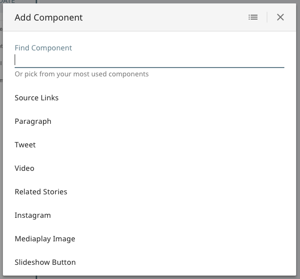
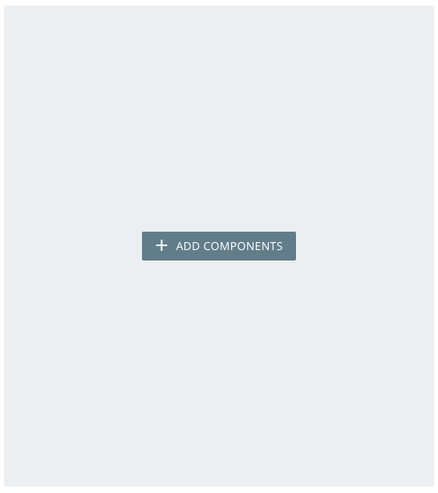
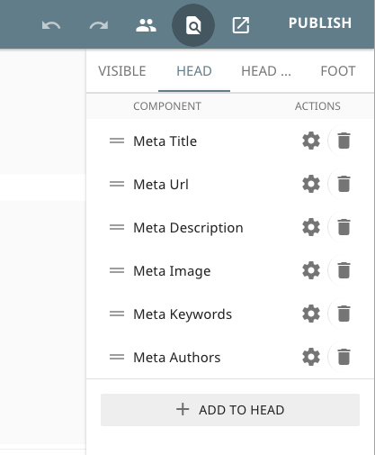
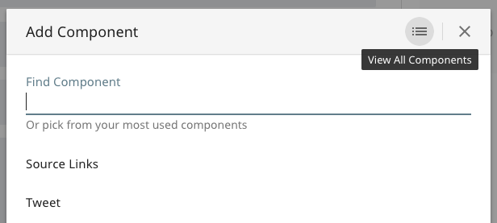

Manipulating Components

Component Lists
Components are added, removed, and reordered in fields called component lists, of which there are four types.
Basic Lists
Components that contain child component lists need to do two things: Render an editable list in their template, and specify a config in their schema.yml.
<div data-editable="myList">{{> component-list myList }}</div>
Note
You'll notice that data-editable is the same attribute used to specify editable fields. The component-list handlebars partial comes from our included library of helpers and partials, and renders a list of components with their data.
myList:
_componentList:
include:
- some-component
- some-other-component
This would create a basic list with drag & drop functionality. When selecting components inside this list, you'd see Remove and Add Component buttons that would allow you to remove those components or add new instances of some-component and some-other-component. When adding components to a list, a component's default data is cloned into a new instance.
Placeholders
Basic lists also allow placeholders, which will display (and prompt users to add components) when the list is empty.
myList:
_componentList:
_placeholder:
height: 600px
include:
- some-component
- some-other-component

Head Lists
Components in the <head> of the page require a different syntax. Much like how you denote the start of <head> components with a <!-- data-editable --> comment, you use html comments for the beginning and the end of these component lists.
<!-- data-editable="myList" -->
{{> component-list myList }}
<!-- data-editable-end -->
The schema.yml config of a head list is the same as a basic list.
myList:
_componentList:
include:
- some-component
- some-other-component
Head component lists get added as tabs to the Find on Page drawer in Kiln automatically, allowing them to be edited.

Invisible Lists
It's useful to have a component list for various components that might not have public-facing visual elements, such as tracking scripts, affiliate marketing scripts, pixels, or lightboxes. If these components must live in the <body> (rather than the <head>), you may add a property to the component list to make them appear as tabs in the Find on Page drawer, allowing them to be edited.
<div data-editable="myList">{{> component-list myList }}</div>
myList:
_componentList:
invisible: true
include:
- some-component
- some-other-component
Page Areas
Page areas are a special type of component list that only exists in layouts. By adding a property to the layout's schema.yml, you can specify that certain component lists exist in the page's data (and thus are specific to that page) rather than the layout's data (thus being shared amongst all pages with that layout).
<div data-editable="myList">{{> component-list myList }}</div>
myList:
_componentList:
page: true
include:
- some-component
- some-other-component
The data for component lists inside components (including layouts) looks like an array of objects:
{
"myList": [{
"_ref": "domain.com/_components/some-component/instances/some-instance"
}, {
"_ref": "domain.com/_components/some-other-component/instances/some-instance"
}]
}
Meanwhile, the data for component lists inside page data looks like an array of strings:
{
"myList": [
"domain.com/_components/some-component/instances/some-instance",
"domain.com/_components/some-other-component/instances/some-instance"
]
}
Page areas may also have placeholders.
Site-Specific Components
All types of component lists allow whitelisting of components using the include property in the config. You may also specify that components in a list should be included or excluded on a specific site. To do so, add a comma-separated list of sites in parenthesis after the name of the component in the include list:
content:
_componentList:
include:
- blockquote (site1, site2) # allow on site1 and site2 ONLY
- paragraph # allow on all sites
- image (not:site1) # allow on all sites EXCEPT site1
- link (site1, site2, site3, not:site2, not:site3) # only allow on site1
# if (for some reason) you both include and exclude a site, it'll filter by the
# included sites first, then filter out the excluded.
Fuzzy Lists
Additionally, all types of component lists may be set to fuzzy. The default include list is appropriate for most situations, but there are certain scenarios where you might want to be less strict. For example, the body of an article might be restricted to paragraphs and images 99% of the time, but you still want to allow your interactives team to create one-off components and add them through Kiln's UI.
You may make any component list fuzzy by adding that property in the config. This will add a View All Components button into the header of the Add Components modal, which will list all components available in your Clay installation.
